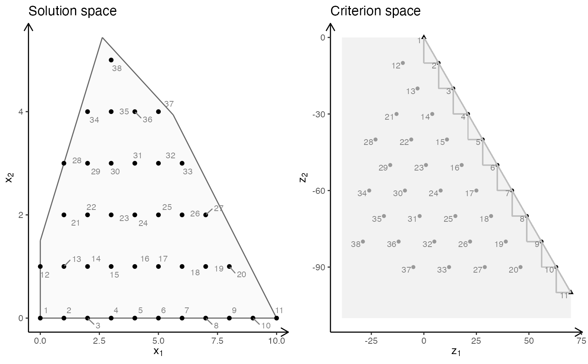
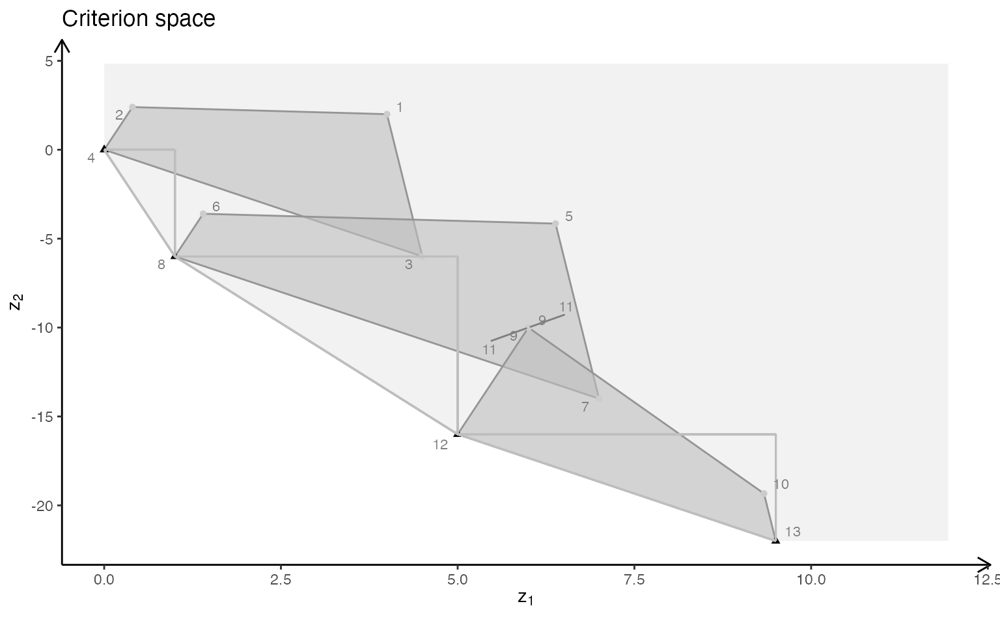

With gMOIP you can also make plots of the criterion space for bi-objective models (linear programming (LP), integer linear programming (ILP), or mixed integer linear programming (MILP)). This vignette gives examples on how to make plots of both the solution and criterion space.
First we load the package:
Bi-objective models with two variables
We define a function for grouping plots of the solution and criterion space:
plotBiObj2D <- function(A, b, obj,
type = rep("c", ncol(A)),
crit = "max",
faces = rep("c", ncol(A)),
plotFaces = TRUE,
plotFeasible = TRUE,
plotOptimum = FALSE,
labels = "numb",
addTriangles = TRUE,
addHull = TRUE)
{
p1 <- plotPolytope(A, b, type = type, crit = crit, faces = faces, plotFaces = plotFaces,
plotFeasible = plotFeasible, plotOptimum = plotOptimum, labels = labels) +
ggplot2::ggtitle("Solution space")
p2 <- plotCriterion2D(A, b, obj, type = type, crit = crit, addTriangles = addTriangles,
addHull = addHull, plotFeasible = plotFeasible, labels = labels) +
ggplot2::ggtitle("Criterion space")
gridExtra::grid.arrange(p1, p2, nrow = 1)
}Let us define the constraints:
First let us have a look at a LP model:
obj <- matrix(
c(7, -10, # first criterion
-10, -10), # second criterion
nrow = 2)
plotBiObj2D(A, b, obj, addTriangles = FALSE)Note the non-dominated (Pareto) set consists of all supported extreme non-dominated points (illustrated with triangles) and the line segments between them.
ILP models with different criteria (maximize):


Note the non-dominated set consists of all points in black (with shape supported extreme:triangle, supported non-extreme:round, unsupported:round (not on the border)). The triangles drawn using the extreme non-dominated points illustrate areas where unsupported non-dominated points may be found. A point in the solution space is identified in the criterion space using the same number.
ILP models with different criteria (minimize):
obj <- matrix(c(7, -10, -10, -10), nrow = 2)
plotBiObj2D(A, b, obj, type = rep("i", ncol(A)), crit = "min")
obj <- matrix(c(3, -1, -2, 2), nrow = 2)
plotBiObj2D(A, b, obj, type = rep("i", ncol(A)), crit = "min")
obj <- matrix(c(-7, -1, -5, 5), nrow = 2)
plotBiObj2D(A, b, obj, type = rep("i", ncol(A)), crit = "min")
obj <- matrix(c(-1, -1, 2, 2), nrow = 2)
plotBiObj2D(A, b, obj, type = rep("i", ncol(A)), crit = "min")MILP model (\(x_1\) integer) with different criteria (maximize):

Note the solution space now consists to segments and hence the non-dominated set may consist of points and segments (open and closed). Note these segments are not highlighted in the current version of gMOIP.
MILP model (\(x_2\) integer) with different criteria (minimize):
Bi-objective models with three variables
We define functions for plotting the solution and criterion space:
plotSol <- function(A, b, type = rep("c", ncol(A)),
faces = rep("c", ncol(A)),
plotFaces = TRUE, labels = "numb")
{
loadView(v = view, close = F, zoom = 0.75)
plotPolytope(A, b, type = type, faces = faces, labels = labels, plotFaces = plotFaces,
argsTitle3d = list(main = "Solution space"))
}
plotCrit <- function(A, b, obj, crit = "min", type = rep("c", ncol(A)), addTriangles = TRUE,
labels = "numb")
{
plotCriterion2D(A, b, obj, type = type, crit = crit, addTriangles = addTriangles,
labels = labels) +
ggplot2::ggtitle("Criterion space")
}Four examples are given. A few plots of the solution space are made interactive to illustrate the functionality.
Example 1
We define the model \(\max \{cx | Ax \leq b\}\) (could also be minimized) with three variables:
Ab <- matrix( c(
1, 1, 2, 5,
2, -1, 0, 3,
-1, 2, 1, 3,
0, -3, 5, 2
), nc = 4, byrow = TRUE)
A <- Ab[,1:3]
b <- Ab[,4]
obj <- matrix(c(1, -6, 3, -4, 1, 6), nrow = 2)We load the preferred view angle for the RGL window:
view <- matrix( c(-0.452365815639496, -0.446501553058624, 0.77201122045517, 0, 0.886364221572876,
-0.320795893669128, 0.333835482597351, 0, 0.0986008867621422, 0.835299551486969,
0.540881276130676, 0, 0, 0, 0, 1), nc = 4)
loadView(v = view)LP model (solution space):
plotSol(A, b)
LP model (criterion space):
plotCrit(A, b, obj, addTriangles = FALSE) ILP model (solution space):
plotSol(A, b, type = c("i","i","i"))
ILP model (criterion space):
plotCrit(A, b, obj, type = c("i","i","i"))MILP model with variable 2 and 3 integer (solution space):
plotSol(A, b, type = c("c","i","i"))
MILP model with variable 2 and 3 integer (criterion space):
plotCrit(A, b, obj, type = c("c","i","i"))MILP model with variable 1 and 3 integer (solution space):
plotSol(A, b, type = c("i","c","i"))
MILP model with variable 1 and 3 integer (criterion space):
plotCrit(A, b, obj, type = c("i","c","i"))MILP model with variable 1 and 2 integer (solution space):
plotSol(A, b, type = c("i","i","c"))
MILP model with variable 1 and 2 integer (criterion space):
plotCrit(A, b, obj, type = c("i","i","c"))MILP model with variable 1 integer (solution space):
plotSol(A, b, type = c("i","c","c"), plotFaces = F)
MILP model with variable 1 integer (criterion space):
plotCrit(A, b, obj, type = c("i","c","c"))
MILP model with variable 2 integer (solution space):
plotSol(A, b, type = c("c","i","c"), plotFaces = F)
MILP model with variable 2 integer (criterion space):
plotCrit(A, b, obj, type = c("c","i","c"))MILP model with variable 3 integer (solution space - Interactive plot):
plotSol(A, b, type = c("c","c","i"), plotFaces = F)MILP model with variable 3 integer (criterion space):
plotCrit(A, b, obj, type = c("c","c","i"))Example 2
We define the model \(\max \{cx | Ax \leq b\}\) (could also be minimized) with three variables:
A <- matrix( c(
-1, 1, 0,
1, 4, 0,
2, 1, 0,
3, -4, 0,
0, 0, 4
), nc = 3, byrow = TRUE)
b <- c(5, 45, 27, 24, 10)
obj <- matrix(c(1, -6, 3, -4, 1, 6), nrow = 2)We load the preferred view angle for the RGL window:
view <- matrix( c(0.976349174976349, -0.202332556247711, 0.0761845782399178, 0, 0.0903248339891434,
0.701892614364624, 0.706531345844269, 0, -0.196427255868912, -0.682940244674683,
0.703568696975708, 0, 0, 0, 0, 1), nc = 4)
loadView(v = view)LP model (solution space):
plotSol(A, b)
LP model (criterion space):
plotCrit(A, b, obj, addTriangles = FALSE) ILP model (solution space):
plotSol(A, b, type = c("i","i","i"))
ILP model (criterion space):
plotCrit(A, b, obj, type = c("i","i","i"))MILP model with variable 2 and 3 integer (solution space):
plotSol(A, b, type = c("c","i","i"))
MILP model with variable 2 and 3 integer (criterion space):
plotCrit(A, b, obj, type = c("c","i","i"))MILP model with variable 1 and 3 integer (solution space):
plotSol(A, b, type = c("i","c","i"), plotFaces = FALSE)
MILP model with variable 1 and 3 integer (criterion space):
plotCrit(A, b, obj, type = c("i","c","i"))MILP model with variable 1 and 2 integer (solution space):
plotSol(A, b, type = c("i","i","c"))
MILP model with variable 1 and 2 integer (criterion space):
plotCrit(A, b, obj, type = c("i","i","c"))MILP model with variable 1 integer (solution space):
plotSol(A, b, type = c("i","c","c"), plotFaces = F)
MILP model with variable 1 integer (criterion space):
plotCrit(A, b, obj, type = c("i","c","c"))MILP model with variable 2 integer (solution space - interactive plot):
plotSol(A, b, type = c("c","i","c"), plotFaces = F)MILP model with variable 2 integer (criterion space):
plotCrit(A, b, obj, type = c("c","i","c"))MILP model with variable 3 integer (solution space - Interactive plot):
plotSol(A, b, type = c("c","c","i"))MILP model with variable 3 integer (criterion space):
plotCrit(A, b, obj, type = c("c","c","i"))Example 3
We define the model \(\max \{cx | Ax \leq b\}\) (could also be minimized) with three variables:
A <- matrix( c(
1, 1, 1,
3, 0, 1
), nc = 3, byrow = TRUE)
b <- c(10, 24)
obj <- matrix(c(1, -6, 3, -4, 1, 6), nrow = 2)We load the preferred view angle for the RGL window:
view <- matrix( c(-0.812462985515594, -0.029454167932272, 0.582268416881561, 0, 0.579295456409454,
-0.153386667370796, 0.800555109977722, 0, 0.0657325685024261, 0.987727105617523,
0.14168381690979, 0, 0, 0, 0, 1), nc = 4)
loadView(v = view)LP model (solution space):
plotSol(A, b)
LP model (criterion space):
plotCrit(A, b, obj, addTriangles = FALSE) 
ILP model (solution space):
plotSol(A, b, type = c("i","i","i"))
ILP model (criterion space):
plotCrit(A, b, obj, type = c("i","i","i"))MILP model with variable 2 and 3 integer (solution space):
plotSol(A, b, type = c("c","i","i"))
MILP model with variable 2 and 3 integer (criterion space):
plotCrit(A, b, obj, type = c("c","i","i"))MILP model with variable 1 and 3 integer (solution space):
plotSol(A, b, type = c("i","c","i"), plotFaces = FALSE)
MILP model with variable 1 and 3 integer (criterion space):
plotCrit(A, b, obj, type = c("i","c","i"))MILP model with variable 1 and 2 integer (solution space):
plotSol(A, b, type = c("i","i","c"))MILP model with variable 1 and 2 integer (criterion space):
plotCrit(A, b, obj, type = c("i","i","c"))MILP model with variable 1 integer (solution space):
plotSol(A, b, type = c("i","c","c"), plotFaces = F)
MILP model with variable 1 integer (criterion space):
plotCrit(A, b, obj, type = c("i","c","c"))MILP model with variable 2 integer (solution space):
plotSol(A, b, type = c("c","i","c"), plotFaces = F)
MILP model with variable 2 integer (criterion space):
plotCrit(A, b, obj, type = c("c","i","c"))
MILP model with variable 3 integer (solution space - Interactive plot):
plotSol(A, b, type = c("c","c","i"), plotFaces = F)
MILP model with variable 3 integer (criterion space):
plotCrit(A, b, obj, type = c("c","c","i"))Example 4
We define the model \(\max \{cx | Ax \leq b\}\) (could also be minimized) with three variables:
A <- matrix( c(
3, 2, 5,
2, 1, 1,
1, 1, 3,
5, 2, 4
), nc = 3, byrow = TRUE)
b <- c(55, 26, 30, 57)
obj <- matrix(c(1, -6, 3, -4, 1, -1), nrow = 2)We load the preferred view angle for the RGL window:
view <- matrix( c(-0.412063330411911, -0.228006735444069, 0.882166087627411, 0, 0.910147845745087,
-0.0574885793030262, 0.410274744033813, 0, -0.042830865830183, 0.97196090221405,
0.231208890676498, 0, 0, 0, 0, 1), nc = 4)
loadView(v = view)LP model (solution space):
plotSol(A, b)
LP model (criterion space):
plotCrit(A, b, obj, addTriangles = FALSE) ILP model (solution space):
plotSol(A, b, type = c("i","i","i"), labels="n")
ILP model (criterion space):
plotCrit(A, b, obj, type = c("i","i","i"), labels="n")MILP model with variable 2 and 3 integer (solution space):
plotSol(A, b, type = c("c","i","i"), labels="n")
MILP model with variable 2 and 3 integer (criterion space):
plotCrit(A, b, obj, type = c("c","i","i"), labels="n")MILP model with variable 1 and 3 integer (solution space):
plotSol(A, b, type = c("i","c","i"), plotFaces = FALSE, labels="n")
MILP model with variable 1 and 3 integer (criterion space):
plotCrit(A, b, obj, type = c("i","c","i"), labels="n")MILP model with variable 1 and 2 integer (solution space):
plotSol(A, b, type = c("i","i","c"), labels="n")MILP model with variable 1 and 2 integer (criterion space):
plotCrit(A, b, obj, type = c("i","i","c"), labels="n")MILP model with variable 1 integer (solution space):
plotSol(A, b, type = c("i","c","c"), labels="n")
MILP model with variable 1 integer (criterion space):
plotCrit(A, b, obj, type = c("i","c","c"), labels="n")MILP model with variable 2 integer (solution space):
plotSol(A, b, type = c("c","i","c"), plotFaces = F, labels="n")
MILP model with variable 2 integer (criterion space):
plotCrit(A, b, obj, type = c("c","i","c"), labels="n")MILP model with variable 3 integer (solution space - Interactive plot):
plotSol(A, b, type = c("c","c","i"), labels="n")
MILP model with variable 3 integer (criterion space):
plotCrit(A, b, obj, type = c("c","c","i"), labels="n")